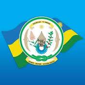
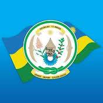
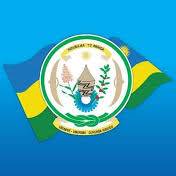
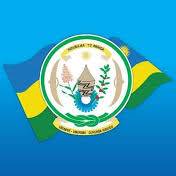
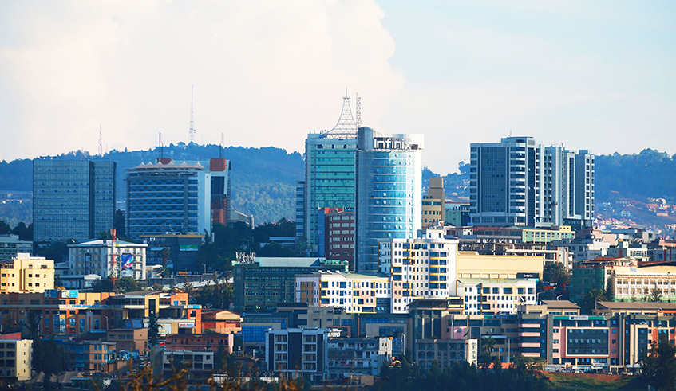
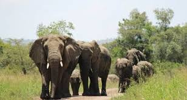
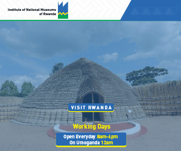
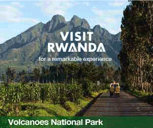
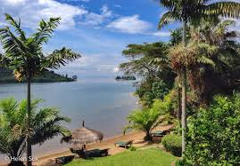

 | Nyungwe is one of the oldest rainforests in Africa, covering 1,019 km2 of dense Afromontane forests, bamboo-covered slopes, grasslands and wetlands. The park feeds two of the world’s largest rivers, The park is also a regional biodiversity hotspot, supporting 1,068 recorded plant species, 322 bird species, 75 known mammal species and 13 different primate species |  | His Excellency Paul Kagame, President of Rwanda, and Commonwealth Secretary-General, The Rt. Hon. Patricia Scotland QC, have announced the postponement of CHOGM 2021 as a result of the continuing impact of the Covid-19 pandemic. Having reviewed all available evidence and risk assessments including with the World Health Organization (WHO) and their risk assessment tool, and after close consultation between the Commonwealth Secretariat and Member States, the decision has been made to postpone the CHOGM in Kigali for a second time. Updates will follow in due course. |
|  | Akagera National Park offers a truly exceptional wildlife experience. It is the only Big-5 reserve in Rwanda and is also home to the rare swamp-dwelling Sitatunga. Guests also have the opportunity to see an abundance of birdlife, including the rare Shoebill stork, the endangered papyrus Gonolex and the much sought-after Red-faced Barbet With over 500 recorded species, Akagera is one of the best birding environs in the world with the highest recorded number of species per unit area. |  | The Institute of National Museums of Rwanda (INMR) is a government institution, which was inaugurated in September 18, 1989 with one ethnographic museum based in Huye district-Southern , King's Palace Museum in Nyanza/Rukari opened in May 2008, and Rwanda Art Museum in Kanombe opened in February 2009. Museum of Environment opened in Karongi District-Western Province on 16th July 2015. National Liberation Museum Park Museum for Campaign Against Genocide Today INMR is positioning itself as a core stakeholder in promoting Rwandan Cultural tourism, with the aim of national economic development. |
|  | The volcanic range which spans Rwanda, Uganda and the Democratic Republic of the Congo is home to the endangered mountain gorilla. Tracking gorillas in Rwanda is safe and relatively accessible. At the latest count, there are approximately 1,000 mountain gorillas in the wild, with 604 in the Virunga Massif. The population is slowly increasing, thanks to concerted efforts between our governments, communities and NGOs. There are twelve gorilla families living in the vVolcanoes National |  | Lake Kivu is approximately 90 km (56 mi) long and 50 km (31 mi) at its widest.[2] Its irregular shape makes measuring its precise surface area difficult; it has been estimated to cover a total surface area of some 2,700 km2 (1,040 sq mi), making it Africa's eighth largest lake.[3] The surface of the lake sits at a height of 1,460 metres (4,790 ft) above sea level. This lake has a chance of suffering a limnic eruption every 1000 years.[2] The lake has a maximum depth of 475 m (1,558 ft) and a mean depth of 220 m (722 ft), making it the world's eighteenth deepest lake by maximum depth, a |